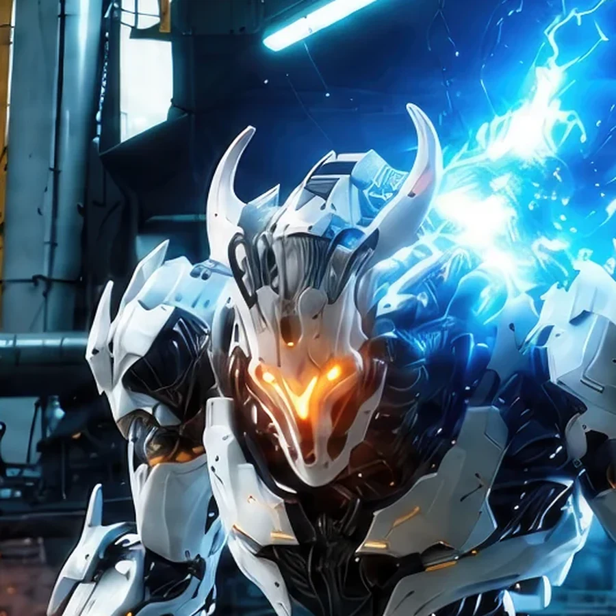
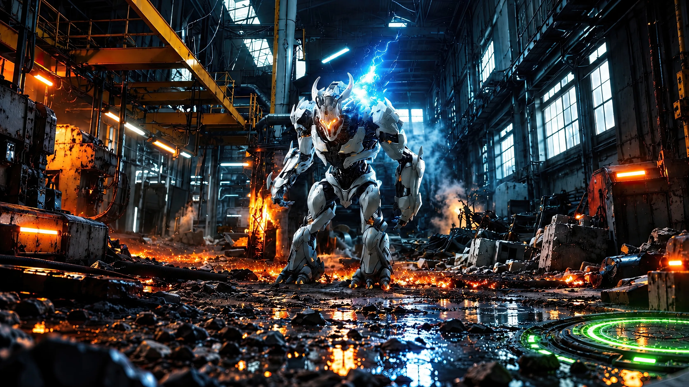
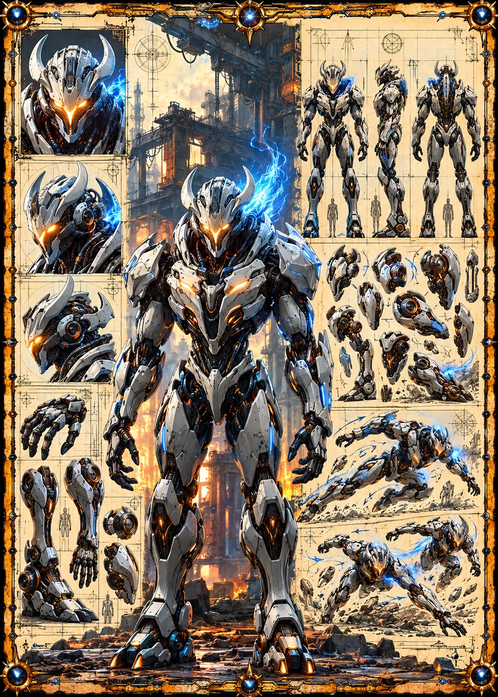

Field Observation
Ovian deployed a green portal at the bottom right of the rain-soaked plaza. The portal creates a hostile access point inside Earth 1's industrial zone.

GENEZYS ARCHIVE · EARTH 1 · Synthbot
Alliance Keeper
Identity & combat record
Archive node 01 / 05

Archive record
Ovian holds the Primal Horde together, which is no small task for a swarm without a leader. The Null Shrink empties an enemy's energy and delays their next strike. Every shell of the Horde answers to the Spore, but the pilots answer to Ovian.
Combat signature
Seeps virulent venom in a smear: Increases enemy's CD by 1. Sets their Cosmara to 0.
Genezys 10:07 ™&©2026LEGIONS
Recovered visual record
Archive node 02 / 05

Full frame available // rotate device to landscape
Technical archive
Archive node 03 / 05

Classified field intelligence
Archive node 04 / 05
FIELD REPORT // HOSTILE PORTAL DEPLOYMENT
Classified search directiveFind the inconsistency hidden in this record
Field Observation
Ovian deployed a green portal at the bottom right of the rain-soaked plaza. The portal creates a hostile access point inside Earth 1's industrial zone.
Environment
Object Analysis
Key Findings
Motion archive
Archive node 05 / 05
Motion record not yet recovered